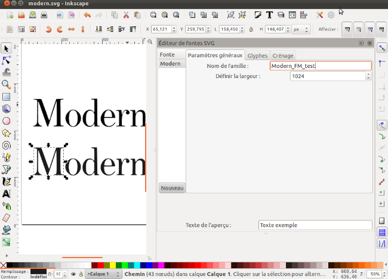
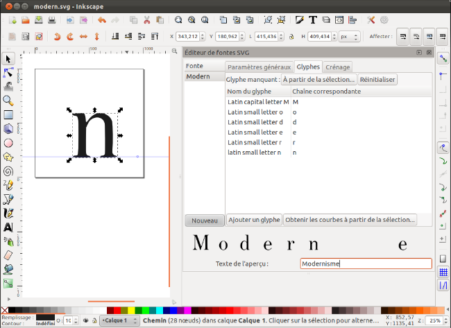

SVG fonts dans Inkscape
Si vous décidez d'utiliser Inkscape pour dessiner vos lettres, vous pourrez récupérer des contours vectoriels ou créer votre fonte à partir de zéro.
Si vous décidez de créer votre fontes ex-nihilo, vous pouvez utiliser le modèle de document fontforge_glyph livré avec Inkscape et qui vous aidera à mieux gérer votre corps et votre ligne de base. Sinon, vous pouvez toujours redimensionner votre document pour qu'il ait une taille de 1000 px sur 1000 px et qui est une bonne base de travail (Fichier > propriétés du document).
Créer les glyphes
Une fois vos lettres dessinées, vous pourrez créer la fonte elle-même.
- Affichez la fenêtre Texte > Éditeur de fontes SVG.
- La fenêtre est séparée en trois parties : la liste de fontes du fichier à gauche; les paramètres et le contenu de la fonte sélectionnée, à droite; un espace d'aperçu en bas.
- Cliquez sur le bouton nouveau en bas de la liste des fontes pour
créer une nouvelle fonte. Donnez-lui un nom explicite. Dans les
paramètres généraux à droite spécifiez au moins le nom de famille.

- Cliquez sur l'onglet Glyphes pour accéder au contenu de la fonte.
- Cliquez sur le bouton [Ajouter un glyphe] puis renseignez le nom (préférez si possible des noms de lettres tels que définis dans Unicode, ici Latin capital letter M) et la lettre qui y sera associée (M).
- Positionnez correctement votre lettre dans votre page fontforge_glyph (l'espace a gauche servant de base à l'espacement entre les caractères).
- Vérifiez que votre ligne de glyphe est bien sélectionnée dans l'Éditeur de fontes SVG puis cliquez sur le bouton [Obtenir les courbes à partir de la sélection].
- Si la zone [Texte de l'aperçu] contient votre lettre elle y apparaîtra, sinon modifiez ce texte pour voir si votre ajout a été correctement pris en compte.
- Recommencez les étapes 5 à 7 pour chaque glyphe nécessaire. Les
glyphes non existants ne pourront bien sûr pas être utilisés. Toute
tentative d'en avoir un aperçu se soldera par un vide béant.

- Enregistrez votre fichier tout simplement au format plain SVG.
Pour utiliser votre fonte normalement avec n'importe quel autre logiciel et l'installer sur votre système il vous faudra certainement la convertir dans un format TrueType ou OpenType. Vous pouvez effectuer cette opération à l'aide de convertisseurs en ligne comme http://onlinefontconverter.com mais vous aurez alors peu de possibilités, au profit d'une aisance (si vous convertissez une fonte dont vous n'êtes pas l'auteur, n'oubliez pas de respecter la volonté de l'auteur inscrite dans la licence choisie par rapport aux droits de modification et au besoin de renommer les versions modifiées. Le droit de modifier accordé par l'auteur va de pair avec le respect de la fonte originale en renommant les versions modifiées pour éviter les collisions de noms et les confusions entre l'original et les dérivés). Pour plus de personnalisation comme ajouter des infos de fontes ou personnaliser la géométrie ou la métrique de votre fonte, ouvrez votre font SVG dans fontforge et enregistrez-la dans le format de votre choix.
Définir le crénage
Si l'approche est définie par la position de la forme dans la page, le crénage, quant à lui, doit se définir manuellement par paire. La démarche est assez simple, mais peut être longue s'il y a de nombreuses paires à modifier. De fait, Inkscape permet d'aborder cette modification, mais FontForge. Il appartiendra donc à chacun de faire son choix sur la solution à adopter en évaluant en particulier les outils d'automatisation mis à disposition par FontForge.
- Dans la fenêtre SVG Fonts, cliquez sur l'onglet [Crénage].
- Dans les listes [Premier glyphe] et [Deuxième glyphe] choisissez les glyphes créés dont vous souhaitez paramétrer le crénage. Cliquez sur [Ajouter la paire].
- La paire s'affiche en dessous. Glissez alors la valeur de crenage pour réduire pour augmenter l'espace. On voit la modification s'effectuer sur la paire, mais aussi sur le texte exemple de manière à avoir une appréciation plus globale de la paire.
- Recommencez pour les autres paires.